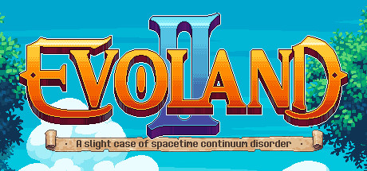
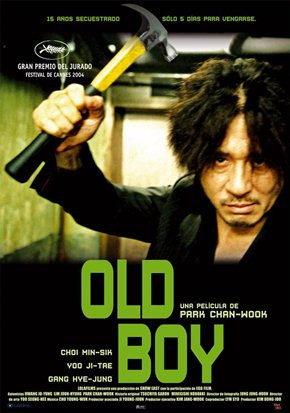

-
Jogo Evoland 2
O estilo gráfico da Evoland 2 muda ao viajar pelo tempo e sua jogabilidade evolui à medida que você se move ao longo do enredo. Também é um RPG real de coração, com um cenário profundo baseado em viagens temporárias: explore diferentes eras e mude a história do mundo. Mas você tem certeza de que as consequências não agravarão as coisas?
Cheio de humor e referências a jogos clássicos, Evoland 2: A Slight Case of Spacetime Continuum Disorder traz uma aventura verdadeiramente épica e extraordinária, ao contrário de qualquer coisa que já tenha jogado antes!
-
Filme OldBoy
1988. Oh Dae-su (Choi Min-sik) é um homem comum, bem casado e pai de uma garota de 3 anos, que é levado a uma delegacia por estar alcoolizado. Ao sair ele liga para casa de uma cabine telefônica e logo em seguida desaparece, dexando como pista apenas o presente de aniversário que havia comprado para a filha. Pouco depois ele percebe estar em uma estranha prisão, que na verdade é um quarto de hotel onde há apenas uma TV ligada, no qual recebe pouca comida na porta e respira um gás que o faz dormir diariamente. Através do noticiário da TV ele descobre que é o principal suspeito do assassinato brutal de sua esposa, o que faz com que tente o suicídio. Sem obter sucesso, ele passa a se adaptar à escuridão de seu quarto e a preparar seu corpo e sua mente para sobreviver à pena que está sendo obrigado a cumprir sem saber o porquê.
-
Ator Jackie Chan

Chan Kong-sang (成龍 ou 房仕龍), mais conhecido como, Jackie Chan (Victoria Peak, Hong Kong, 7 de abril de 1954), é um ator, produtor, roteirista, coreógrafo, diretor de cinema e cantor honconguês especialista em artes marciais, tendo estudado hapkido e vários estilos de Kung Fu, como Drunken Fist, Wing Chun, Shaolin do Norte, Monkey Style e Wushu moderno.
Um fato que ajuda a o sucesso de Jackie Chan é o seu carisma com o público. Entretanto, o seu estilo original de fazer filmes é que foi realmente decisivo para a sua carreira. Jackie Chan utiliza os mais diversos objetos em suas cenas de luta, entre eles cadeiras, mesas, lâmpadas, cordas, etc., outra característica marcante é que Jackie Chan dispensa o uso de dublês para as cenas perigosas (graças a isso já quebrou o nariz, o tornozelo e os dedos diversas vezes, sendo que uma vez ele quase morreu), também é típico dos filmes de Jackie Chan a exibição dos erros de filmagem antes, durante ou depois dos créditos finais e a inclusão de cenas de humor em meio às lutas, ou em outras partes do filme, mesmo quando este não é de humor.
Jackie Chan é um dos Atores orientais que faz maior sucesso no Ocidente. Além dos filmes em que participou, ainda há uma história em quadrinhos e um desenho animado com o seu nome Jackie Chan também possui uma estrela na Calçada da Fama, localizada em Byken 6801 Hollywood Boulevard, e uma estrela na Avenida das Estrelas de Hong Kong, sendo considerado por muitos como o maior ator oriental.
-
Atriz Angelina Jolie
Angelina Jolie (nascida Angelina Jolie Voight, Los Angeles, 4 de junho de 1975) é uma atriz, cineasta e ativista humanitária norte-americana. É vencedora de um Oscar, três Globos de Ouro e dois Prêmios Screen Actors Guild e é constantemente citada como a atriz mais bem paga de Hollywood. Jolie fez sua estreia no cinema ao lado de seu pai, Jon Voight, em Lookin 'to Get Out (1982), porém sua carreira começou a sério uma década mais tarde com Cyborg 2 (1993), uma produção de baixo orçamento, seguido por seu primeiro papel principal em um grande filme, Hackers (1995). Estrelou os telefilmes biográficos aclamados pela crítica George Wallace (1997) e Gia (1998), e ganhou o Oscar de Melhor Atriz Coadjuvante por sua atuação no drama Girl, Interrupted (1999).
Em 2001, alcançou reconhecimento internacional após sua interpretação como a heroína dos jogos eletrônicos Lara Croft em Lara Croft: Tomb Raider, estabelecendo-se assim entre as principais atrizes de Hollywood. Continuou a sua carreira como estrela de ação em Mr. & Mrs. Smith (2005), Wanted (2008), Salt (2010) e O Turista (2010). Recebeu elogios da crítica por suas atuações nos dramas A Mighty Heart (2007) e A Troca (2008), o qual lhe rendeu uma indicação ao Oscar de Melhor Atriz. A partir da década de 2010, ela expandiu sua carreira para direção, roteiro e produção, dirigindo os dramas de guerra In the Land of Blood and Honey (2011) e Invencível (2014). Seu maior sucesso comercial veio com o filme de fantasia Maleficent (2014). Até novembro de 2017, ela era a décima quinta atriz de maior bilheteria de todos os tempos na América do Norte, e uma das cem primeiras pessoas em geral, com seus filmes fazendo mais de 2,1 bilhões de dólares.
Como uma figura pública, Jolie é citada como uma das pessoas mais influentes e poderosas na indústria de entretenimento americana, bem como a mulher mais bonita do mundo, por vários meios de comunicação. Sua vida pessoal é objeto de ampla publicidade. Divorciada dos atores Jonny Lee Miller e Billy Bob Thornton, ela se separou de seu terceiro marido, o ator Brad Pitt, em setembro de 2016, declarando diferenças irreconciliáveis. Eles tiveram seis filhos juntos, três dos quais foram adotados.
-
Diretor Quentin Tarantino
Quentin Jerome Tarantino (Knoxville, 27 de agosto de 1963) é um cineasta, roteirista e ator norte-americano. Alcançou a fama rapidamente no início da década de 1990 por seus roteiros não-lineares, diálogos memoráveis e o uso de violência que trouxeram uma vida nova ao padrão de filmes norte-americanos.
É o mais famoso dos jovens diretores por trás da revolução de filmes independentes dos anos 90, tornando-se conhecido pela sua verborragia, seu conhecimento enciclopédico de filmes, tanto populares, quanto os considerados "cinema de arte".
-
Música Lisztomania - Phoenix
"Lisztomania" é uma música da banda francesa Phoenix de seu quarto álbum, Wolfgang Amadeus Phoenix. É o segundo single do álbum, embora um video musical da música tenha sido lançado antes de "1901". O video musical mostra que eles se apresentam ao vivo e vão para fora para encontrar um dirigível como o mostrado na capa do álbum. A música ajudou o álbum a ser o mais bem sucedido após o sucesso anterior, "1901".
Ele alcançou o # 11 no gráfico Bubbles Under Hot 100 Singles nos EUA e também o # 15 na Bélgica. Phoenix lançou uma edição remix do álbum mais tarde em 2009, com duas das faixas sendo "Lisztomania" remix de Alex Metric e 25 Hours por day. A música entrou no # 4 no Triple J Hottest 100, 2009, [3] fazendo Phoenix a primeira banda francesa a terminar no top 5 do Hottest 100.
-
Banda ONE OK ROCK
One Ok Rock (ワンオクロック?) estilizado como ONE OK ROCK, é uma banda de rock japonesa formada em Tóquio, Japão no ano de 2005. Atualmente é composta pelos membros Taka (vocal), Toru (guitarra/líder), Ryota (baixo) e Tomoya (bateria). A origem de seu nome advém da palavra “one o’ clock”, expressão na língua inglesa que significa "à uma hora", horário em que o grupo marcava os ensaios aos finais de semana, além de ser o horário mais barato disponível para usar o espaço de ensaios. No entanto, na língua japonesa, a pronúncia para a letra L é igual à R, o que faz com que "one o’ clock" acabe por se tornar “one o’ krock”. O grupo aproveitou-se disso, e separou a expressão em três partes, tornando One Ok Rock o nome da banda.
O One Ok Rock têm experimentado diversos subgêneros do rock ao longo de sua existência, indo do rock alternativo ao emo, do pós-hardcore ao pop rock. Muitos de seus singles lançados, entraram na parada musical da Oricon, o que ajudou a catapultar a banda como uns dos mais promissores artistas do rock japonês da atualidade.
-
Livro Assassinato no Expresso do Oriente - Agatha Christie
Pouco depois da meia-noite, uma tempestade de neve para o Expresso Oriente nos trilhos. O luxuoso trem está surpreendentemente cheio para essa época do ano. Mas, na manhã seguinte, há um passageiro a menos. Um homem é encontrado morto em sua cabine com doze facadas. Com o trem preso na neve, cabe à Hercule Poirot desvendar esse misterioso e conturbado crime.
O livro é baseado no verdadeiro caso de um sequestro ocorrido nos Estados Unidos, em 1932. Agatha Christie resolveu utilizar esse fato para criar um grande conflito moral nos leitores. O livro recebeu 3 adaptações, uma em 1974, outra em 2001 e a ultima em 2017.
-
Cartoon Gravity Falls
Gravity Falls (Gravity Falls: Um Verão de Mistérios ou apenas Gravity Falls) foi uma série americana criada por Alex Hirsch (roteirista de As Trapalhadas de Flapjack e Adolepeixes). Na noite 15 de junho de 2012, houve uma prévia da série logo depois da estreia do filme Let It Shine e no dia 29 de junho de 2012, a série estreou oficialmente no Disney Channel dos EUA. A série teve uma "espiadinha" no dia 30 de setembro de 2012 no Disney Channel Brasil e estreou oficialmente em 6 de outubro de 2012. Também foi exibida pela Rede Globo de 10 de maio a 13 de setembro de 2014. Em 19 de julho de 2013, a série foi renovada para uma segunda temporada, que estreou no Disney Channel Brasil em 5 de outubro, às 17h, e no Disney Channel dos EUA em 1 de agosto de 2014. No Disney Channel dos EUA, o último episódio da série foi exibido em 15 de fevereiro de 2016 e no Disney Channel Brasil, foi exibido em 28 de maio de 2016.
-
Animes Fullmetal Alchemist: Brotherhood
Fullmetal Alchemist: Brotherhood é uma série de anime adaptada do mangá Fullmetal Alchemist de Hiromu Arakawa. Produzido por Bones, a série é dirigida por Yasuhiro Irie e escrita por Hiroshi Ōnogi. Fullmetal Alchemist: Brotherhood é a segunda série de televisão de anime baseada no Fullmetal Alchemist, a primeira sendo o Fullmetal Alchemist de 2003. Ao contrário da adaptação anterior, a Brotherhood é uma adaptação quase diretamente dos eventos originais do mangá. Foi anunciado pela primeira vez no volume Tankōbon da série manga. No Japão, é diferenciado da série de 2003 pela inclusão do título de língua inglesa. A série estreou em 5 de abril de 2009, no bloco de tempo de anime JST de domingo, 5 de maio de MBS-TBS, substituindo o Mobile Suit Gundam 00 e funcionou semanalmente até exibir seu episódio final em 4 de julho de 2010. Atrizes de voz Romi Park e Rie Kugimiya retoma seus papéis como personagens principais Edward e Alphonse Elric, respectivamente.